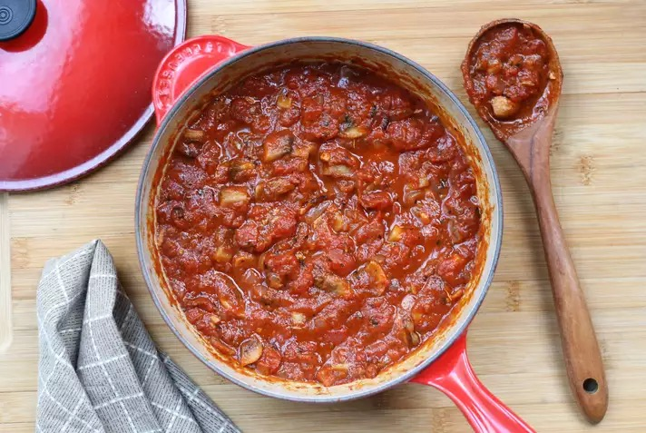

Vegitarian Pasta Sauce with Mushrooms

Description
'Description' of Pasta Sauce
Ingridents
- 0.25c Butter
- 0.5lb Baby portobello
- 0.25lb Button mushrrom
- 1 Onion, chopped
- 2tbsp Red wine
- 2x 14.5oz Diced tomato can
- 1x 23oz Pasta Sauce
- 1tsp Garlic, minced
- 1tsp Red chili flake
- 1tsp Dried oregano
- 1pinch White sugar
- Salt and BP to tasete
- Fresh basil, chiffonade
Steps
- Melt butter in a large pot over medium heat. Add portobello mushrooms, button mushrooms, and onion.
Cook over medium-low heat, stirring occasionally, until mushrooms release their juices
and onion is soft and translucent, 6 to 8 minutes.
- Pour in wine to deglaze the pot, scraping up any bits stuck to the bottom.
- Pour in diced tomatoes and cook, stirring, until liquid has slightly reduced,
about 5 minutes. Add pasta sauce, garlic, Italian seasoning, sugar, salt, and pepper; stir to combine.
Bring to a boil over medium-high heat. Reduce temperature to low and simmer, uncovered,
until flavors have blended and desired thickness has been reached, about 15 minutes.
Stir sauce occasionally, finish with basil.